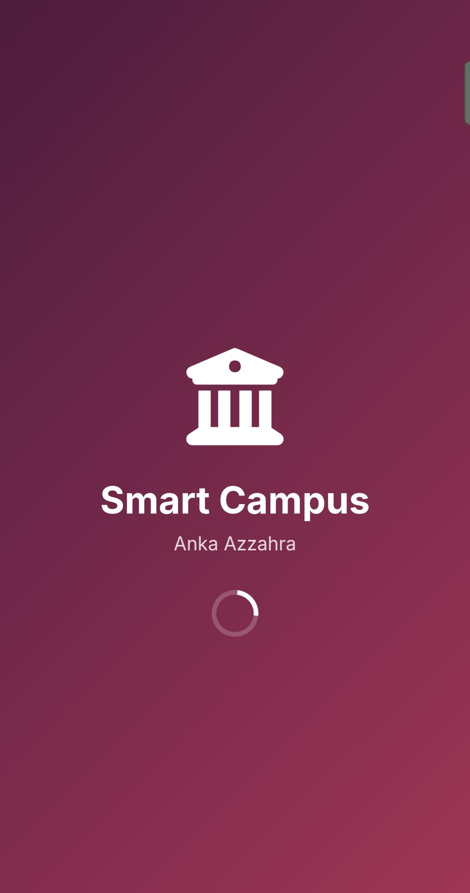
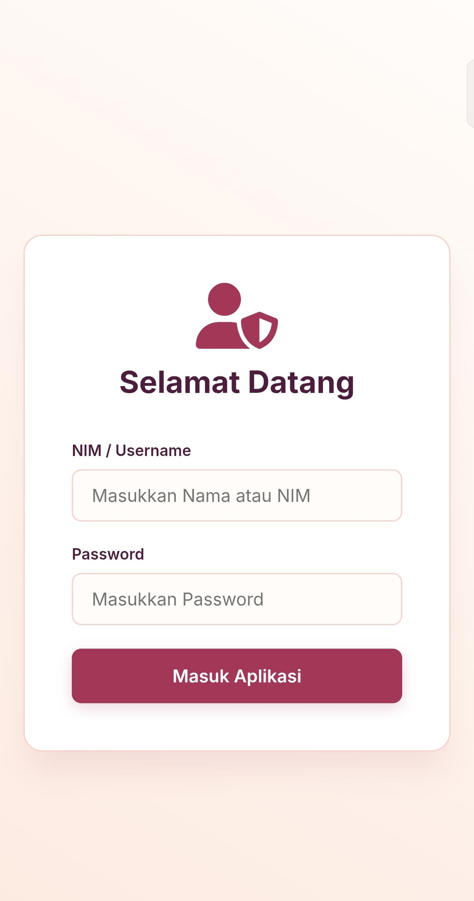

Platform manajemen akademik terintegrasi yang dirancang untuk efisiensi operasional, transparansi data, dan pengalaman pengguna yang seamless.

Halaman pembuka dengan animasi smooth yang memperkuat identitas brand kampus.

Sistem autentikasi aman yang terhubung langsung dengan database akademik.
Pusat kontrol untuk memantau jadwal, nilai, dan notifikasi penting secara real-time.
Smart Campus merupakan solusi digital berbasis cloud yang mentransformasi alur birokrasi kampus tradisional menjadi sistem yang lebih efisien dan modern.
Sistem ini mencakup modul manajemen presensi otomatis, penginputan nilai yang terpusat, serta modul pelaporan keuangan mahasiswa yang terintegrasi. Fokus utama pengembangan adalah mendukung ekosistem kampus yang lebih digital dan paperless.